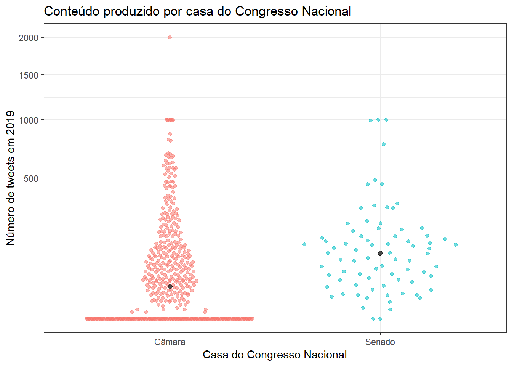
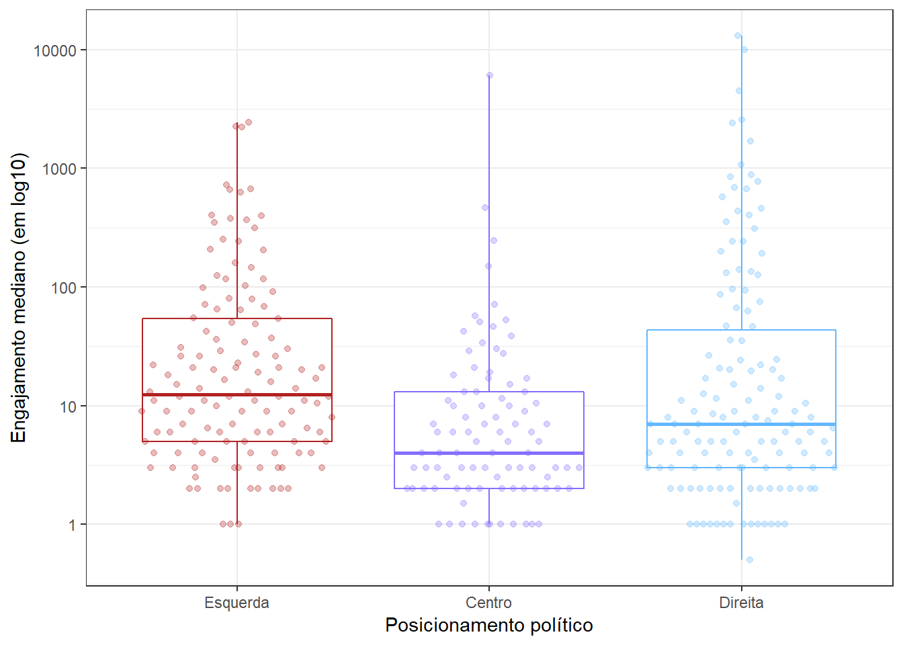

Na maioria dos países democráticos, os parlamentares costumam adotar perfis em redes sociais como canais de comunicação não-oficiais, através dos quais podem não somente divulgar sua atuação política, mas também comentar assuntos cotidianos e entrar em contato direto da população em geral.
O Twitter tem atraído bastante a atenção dos brasileiros nos últimos meses e, muitas vezes, isso não se deve às suas funcionalidades, mas às polêmicas geradas a partir de postagens de figuras políticas do país. Nesse sentido, decidiu-se explorar os dados de nossos parlamentares twitteiros na tentativa de compreender melhor como tweeta o Congresso Nacional brasileiro.
Para as análises apresentadas a seguir, foram utilizadas as bibliotecas tidyverse, ggplot2, ggbeeswarm e plotly. Já os dados utilizados estão estruturados da seguinte maneira:
glimpse(atividade)## Observations: 608
## Variables: 19
## $ id_parlamentar <chr> "204554", "204521", "204379", "204560", ...
## $ casa <chr> "câmara", "câmara", "câmara", "câmara", ...
## $ nome_eleitoral <chr> "ABÍLIO SANTANA", "ABOU ANNI", "ACÁCIO F...
## $ partido <chr> "PR", "PSL", "PROS", "PSDB", "NOVO", "PP...
## $ UF <chr> "BA", "SP", "AP", "BA", "SP", "GO", "MG"...
## $ twitter <chr> "AbilioSantana_", "abouannipv", "Favacho...
## $ seguidores <dbl> NA, NA, NA, NA, 4652, NA, NA, NA, NA, NA...
## $ segue <dbl> NA, NA, NA, NA, 315, NA, NA, NA, NA, NA,...
## $ n_proprio <dbl> 0, 0, 0, 0, 99, 0, 0, 0, 0, 0, 0, 0, NA,...
## $ n_retweet <dbl> 0, 0, 0, 0, 9, 0, 0, 0, 0, 0, 0, 0, NA, ...
## $ engaj_total <dbl> 0, 0, 0, 0, 7090, 0, 0, 0, 0, 0, 0, 0, N...
## $ engaj_total_proprio <dbl> 0, 0, 0, 0, 6701, 0, 0, 0, 0, 0, 0, 0, N...
## $ engaj_total_retweet <dbl> 0, 0, 0, 0, 389, 0, 0, 0, 0, 0, 0, 0, NA...
## $ engaj_mediano <dbl> 0.0, 0.0, 0.0, 0.0, 26.5, 0.0, 0.0, 0.0,...
## $ engaj_mediano_proprio <dbl> 0.0, 0.0, 0.0, 0.0, 22.5, 0.0, 0.0, 0.0,...
## $ engaj_mediano_retweet <dbl> 0.0, 0.0, 0.0, 0.0, 0.0, 0.0, 0.0, 0.0, ...
## $ engaj_max <dbl> 0, 0, 0, 0, 1031, 0, 0, 0, 0, 0, 0, 0, N...
## $ engaj_max_proprio <dbl> 0, 0, 0, 0, 1031, 0, 0, 0, 0, 0, 0, 0, N...
## $ engaj_max_retweet <dbl> 0, 0, 0, 0, 99, 0, 0, 0, 0, 0, 0, 0, NA,...Para contabilizar o conteúdo produzido no Twitter será utilizada a soma do número de tweets e retweets de cada parlamentar. Considerando que o número de parlamentares eleitos por partido varia muito, será utilizada a mediana da soma (com agrupamento por partido) citada anteriormente. Por fim, não serão analisados parlamentares sem partido.
parlamentares_com_tt <- atividade %>% filter(!is.na(twitter))
parlamentares_com_tt <- parlamentares_com_tt %>% filter(partido != "S/Partido")
parlamentares_com_tt <- parlamentares_com_tt %>% mutate(total_tweets = n_proprio + n_retweet)
parlamentares_com_tt <- parlamentares_com_tt %>% mutate(casa = if_else(casa == 'senado', 'Senado', 'Câmara'))
centro <- c("AVANTE", "MDB", "PSD", "PSDB", "PTB", "SOLIDARIEDADE")
esquerda <- c("PCdoB", "PDT", "PMN", "PPL", "PPS", "PROS", "PSB", "PSOL", "PT", "PV", "REDE")
direita <- c("DC", "DEM", "NOVO", "PATRI", "PHS", "PODE", "PP", "PR", "PRB", "PRP", "PSC", "PSL")
dados1 <- parlamentares_com_tt %>%
group_by(partido) %>%
summarise(conteudo_produzido = median(total_tweets, na.rm = TRUE),
median_retweet = median(n_retweet, na.rm = TRUE),
median_proprio = median(n_proprio, na.rm = TRUE)
) %>%
mutate(posicionamento = case_when(
partido %in% centro ~ "Centro",
partido %in% esquerda ~ "Esquerda",
partido %in% direita ~ "Direita",
TRUE ~ NA_character_)
)
plot1 <- dados1 %>%
ggplot(aes(x= reorder(partido, conteudo_produzido), y= conteudo_produzido, fill = posicionamento, alpha = .4,
text = paste("Partido:", partido, "<br>Mediana de tweets:", median_proprio, "<br>Mediana de retweets:", median_retweet))) +
geom_col(show.legend = FALSE) +
labs(x = 'Partido', y = 'Mediana do número de tweets de 2019', title = 'Conteúdo produzido por Parlamentar') +
scale_fill_manual(values = c("slateblue1", "steelblue1", "firebrick")) +
coord_flip()
ggplotly(plot1, tooltip = c("text"))Conforme o gráfico de barras acima, os partidos mais twitteiros do Brasil são o PSOL, o PCdoB e o NOVO. É interessante notar que os partidos com mais parlamentares eleitos (PSL e PT) não figuram entre as primeiras posições e que a mediana de tweets do PSOL se aproxima do dobro da mediana do 2º colocado. Ainda, descobriu-se alguns partidos (PR, PPL, DC e AVANTE) em que todos os parlamentares eleitos que tem uma conta no Twitter são ou estão inativos nessa rede social.
Diante do questionamento anterior, mostrou-se relevante definir a popularidade dos partidos políticos para tentar explicar o motivo de alguns deles produzirem uma quantidade tão superior de conteúdo em relação aos seus pares. Visando avaliar essa popularidade, decidiu-se utilizar a diferença entre os números de perfis seguidos e perfis seguidores de cada partido e, para isso, a mediana foi novamente a métrica principal.
dados_seguidores <- parlamentares_com_tt %>%
group_by(partido) %>%
summarise(n = median(seguidores, na.rm = TRUE), tipo = "Seguidores")
dados_segue <- parlamentares_com_tt %>%
group_by(partido) %>%
summarise(n = median(segue, na.rm = TRUE), tipo = "Segue")
dados2 <- rbind(dados_seguidores, dados_segue) %>% filter(!is.na(n))
plot2 <- dados2 %>%
ggplot(mapping = aes(x = reorder(partido, n), y = n, color = tipo, alpha = .4,
text = paste ("Tipo:", tipo, "<br>Partido:", partido, "<br>Quantidade:", n))) +
geom_point(show.legend = FALSE) +
labs(x = "Partido", y = "Número de Seguidores/Seguindo", title = "Popularidade dos partidos políticos no Twitter") +
scale_y_log10() +
coord_flip()
ggplotly(plot2, tooltip = c("text"))É notável que os partidos que seguem mais pessoas não são, necessariamente, aqueles com mais seguidores, fato que é explicitado pela diferença de comportamento entre os pontos Seguidores e Segue do gráfico acima. O PSOL mais uma vez apresenta a liderança isolada entre os partidos políticos, de modo que a quantidade de conteúdo produzido por seus parlamentares torna-se muito mais compreensível dada a quantidade de eleitores que os seguem no Twitter. Por fim, ainda em comparação com a análise anterior, é interessante perceber que os partidos cujos parlamentares não produziram nenhum conteúdo em 2019 não são aqueles com menos seguidores.
Para determinar qual das casas do Congresso Nacional e quais os parlamentares mais ativos no Twitter, será utilizada a soma do número de tweets e retweets de cada parlamentar, agrupando-os pela casa a que pertencem. Considerando a diferença do número de eleitos em cada casa (513 deputados e 81 senadores), adotou-se a mediana dessa soma como métrica principal, representada como pontos pretos no gráfico abaixo.
parlamentares_com_tt %>%
ggplot(aes(x = casa, y = total_tweets, color = casa)) +
geom_quasirandom(aes(alpha = .4), show.legend = FALSE) +
stat_summary(geom = "point", fun.y = "median", size = 2, color = 'black', alpha = .7) +
labs(x = "Casa do Congresso Nacional", y = "Número de tweets em 2019", title = "Conteúdo produzido por casa do Congresso Nacional") +
scale_y_continuous(trans = "sqrt")
É perceptível que o Senado atingiu uma mediana consideravelmente superior à Câmara, trazendo a conclusão que esta é, proporcionalmente, a casa mais twitteira do Congresso Nacional brasileiro. Além disso, também é possível notar a existência de uma grande quantidade de deputados inativos em suas contas do Twitter, enquanto entre os senadores isso acontece bem menos. Em contrapartida, em ambas as casas é possível identificar um seleto número de parlamentares que produzem muito mais conteúdo que os seus pares e, para melhor entendimento desse comportamento, optou-se por gerar um novo gráfico.
top10_camara <- parlamentares_com_tt %>%
mutate(conteudo_produzido = n_retweet + n_proprio, na.rm = TRUE) %>%
filter(casa == "Câmara") %>%
top_n(10, conteudo_produzido)
top10_senado <- parlamentares_com_tt %>%
mutate(conteudo_produzido = n_retweet + n_proprio, na.rm = TRUE) %>%
filter(casa == "Senado") %>%
top_n(10, conteudo_produzido)
plot_camara <- top10_camara %>%
ggplot(aes(x = reorder(nome_eleitoral, conteudo_produzido), y = conteudo_produzido, fill = nome_eleitoral, alpha = .4,
text = paste("Casa:", casa, "<br>Número de tweets:", n_proprio, "<br>Número de retweets:", n_retweet))) +
geom_col(show.legend = FALSE) +
scale_fill_brewer(palette = "Set3") +
coord_flip()
plot_senado <- top10_senado %>%
ggplot(aes(x = reorder(nome_eleitoral, conteudo_produzido), y = conteudo_produzido, fill = nome_eleitoral, alpha = .4,
text = paste("Casa:", casa, "<br>Número de tweets:", n_proprio, "<br>Número de retweets:", n_retweet))) +
geom_col(show.legend = FALSE) +
scale_fill_brewer(palette = "Set3") +
coord_flip()
subplot(ggplotly(plot_camara, tooltip = c("text")), ggplotly(plot_senado, tooltip = c("text")), nrows = 2)Quanto aos parlamentares, foi possível perceber que o deputado Bacelar (PODE) mostra-se muito mais ativo no Twitter, não somente em relação aos seus pares, mas também aos senadores. Já no Senado, Álvaro Dias (PODE), Humberto Costa (PT) e Jorge Kajuru (PSB) são aqueles que não param de tweetar.
Para responder esta pergunta, é necessário entender onde cada partido político se localiza no espectro político. Dada a subjetividade desta avaliação, adotou-se o modo como os próprios partidos se descrevem e não a atuação de seus parlamentares, gerando três grandes grupos de partidos: esquerda, centro e direita. Considerando a diferença no número de partidos e de parlamentares em cada um desses grupos, decidiu-se utilizar o engajamento mediano como métrica da análise, sendo este engajamento a soma do número de likes e de retweets recebidos pelos parlamentares. Além disso, por questões de visualização, adotou-se uma escala logarítmica.
parlamentares_com_tt <- parlamentares_com_tt %>%
mutate(posicionamento = case_when(
partido %in% centro ~ "Centro",
partido %in% esquerda ~ "Esquerda",
partido %in% direita ~ "Direita",
TRUE ~ NA_character_)
) %>%
mutate(ordem_posicionamento = case_when(
posicionamento == "Esquerda" ~ 1,
posicionamento == "Centro" ~ 2,
posicionamento == "Direita" ~ 3)
)
parlamentares_com_tt %>%
filter(!is.na(posicionamento)) %>%
ggplot(aes(x = reorder(posicionamento, ordem_posicionamento), y = engaj_mediano, color = posicionamento)) +
geom_boxplot(coef = 1000, show.legend = FALSE) +
geom_quasirandom(alpha = .3, show.legend = FALSE) +
labs(x = "Posicionamento político", y = "Engajamento mediano (em log10)") +
scale_colour_manual(values = c("slateblue1", "steelblue1", "firebrick")) +
scale_y_log10()
Os três grandes grupos do espectro político apresentaram características bem peculiares. Excetuando-se alguns poucos parlamentares, os partidos centristas tem resultados bem inferiores aos demais quanto ao engajamento gerado via Twitter, o que não chega a surpreender dado o nosso cenário político. Já a esquerda conta com a maior das medianas encontradas e engajamentos mais homogêneos entre seus parlamentares. Por fim, a direita conta com valores mais dispersos, mas também com os parlamentares que geram os maiores engajamentos.